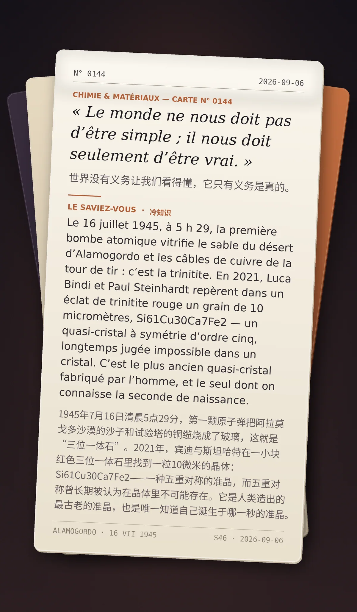

« Le monde ne nous doit pas d’être simple ; il nous doit seulement d’être vrai. »（世界没有义务让我们看得懂，它只有义务是真的。）
Le 16 juillet 1945, à 5 h 29, la première bombe atomique vitrifie le sable du désert d’Alamogordo et les câbles de cuivre de la tour de tir : c’est la trinitite. En 2021, Luca Bindi et Paul Steinhardt repèrent dans un éclat de trinitite rouge un grain de 10 micromètres, Si61Cu30Ca7Fe2 — un quasi-cristal à symétrie d’ordre cinq, longtemps jugée impossible dans un cristal. C’est le plus ancien quasi-cristal fabriqué par l’homme, et le seul dont on connaisse la seconde de naissance. （1945年7月16日清晨5点29分，第一颗原子弹把阿拉莫戈多沙漠的沙子和试验塔的铜缆烧成了玻璃，这就是“三位一体石”。2021年，宾迪与斯坦哈特在一小块红色三位一体石里找到一粒10微米的晶体：Si61Cu30Ca7Fe2——一种五重对称的准晶，而五重对称曾长期被认为在晶体里不可能存在。它是人类造出的最古老的准晶，也是唯一知道自己诞生于哪一秒的准晶。）
冷知识由执笔的模型自行查证。逐条断言、来源与所引原句存档在纯文字副本里，未经程序逐字校验，留作事后核实。